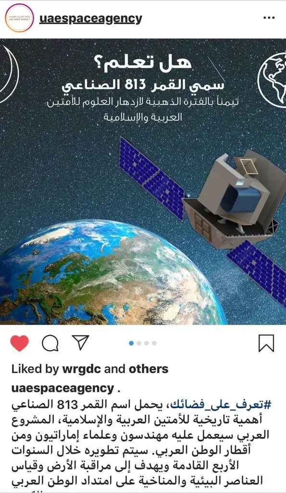
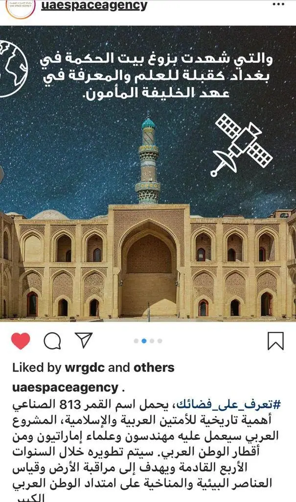

أخبار علمية ·
كيف نسيطر على خطر المخلفات الفضائية وما آفاق حل المعضلة؟
تُصنَّف المخلفات الفضائية بأنها مشكلة كبيرة قد تعرّض رحلات السفر إلى الفضاء للخطر، إن لم تُحَل بالطريقة الصحيحة.
وبدا جليًا خلال العقد الأخير، تلهف البشر للوصول إلى المريخ وما بعده، إذ تخطط المنظمات الخاصة والممولة حكوميًا، تكثيف رحلاتنا إلى الفضاء، وبناء موائل صالحة للعيش خلال العقود القليلة المقبلة. ويرتبط ذلك بقدرتنا على الخروج من كوكبنا بأمان وسلاسة. لكن حلمنا يبقى محفوفًا بالمخاطر، بسبب تراكم المخلفات الفضائية الطافية حول كوكبنا، وتهديدها لحياة رواد الفضاء في محطة الفضاء الدولية.
ولا تقتصر النفايات الفضائية على القطع الكبيرة، فكوكبنا محاط بقطع ركام تدور بسرعة تصل إلى نحو 28163.52 كيلومتر في الساعة؛ أي أسرع من الرصاصة بنحو 10 مرات. ويصل تعدادها إلى 128 مليون قطعة يتراوح حجمها بين مليمتر وأحد وسنتيمتر واحد، و900 ألف قطعة حجمها بين سنتيمتر وأحد و10 سنتيمترات، فضلًا عن 34 ألف قطعة أكبر من 10 سنتيمترات؛ وفقًا لتقديرات وكالة الفضاء الأوروبية.
ونقل موقع وايرد الأميركي، عن جاك بيكون، العالم في وكالة الإدارة الأمريكية للملاحة الجوية والفضاء (ناسا) أن «اصطدام قطعة ألمنيوم وقطعة من الحطام الفضائي حجمها نحو 10 سنتيمترات، يكافئ تفجير 7 كيلوجرامات من الديناميت، وليس من السهل معالجة المشكلة.»
وتنبع خطورة المخلفات الفضائية، من قدرتها على قطع الكابلات، أو إتلاف نوافذ سفن الفضاء، وقد تتسبب بمصرع أو إصابة رواد الفضاء.
أجسام غريبة تطفو حول كوكبنا
وجاء تراكم المخلفات الفضائية حصيلة لستين عامًا من النشاط الفضائي، وتحتوي بقايا أجهزة الاتصالات وأقمار اصطناعية معطلة وقطع صاروخية محترقة وأدوات مفقودة وجزيئات ناتجة عن الانفجارات والاصطدامات.
قد نصادف أيضًا قطعًا صغيرة من الطلاء تُقدَّر أعدادها بالملايين، وأجزاء من مركبات الإطلاق، وسوائل متصلبة لمحركات الصواريخ، والأغرب من ذلك وجود قفازات طافية، وعلب أمونيا، ومخلفات التبول، فضلًا عن رماد جين رودنبيري، منتج سلسلة ستار تريك.
وقال ستيوارت جراي، أستاذ هندسة الميكانيك والطيران في جامعة ستراثكلايد الأسكتلندية، في حديث خاص لمرصد المستقبل «بوسعنا تعقب نحو 20 ألف قطعة من الركام الفضائي، حتى التي يتجاوز حجمها 10 سنتيمترات. علمًا أن أكثر من نصف هذه الأجسام حطام ناتج من الاصطدامات العشوائية. وربعها مركبات فضائية؛ من ضمنها 1500 مركبة نشطة تقريبًا، أما المتبقي فلا يزيد عن حطام صواريخ ومخلفات البعثات الفضائية. إن الصورة الكاملة لهذه المخلفات مقلقة جدًا، إذ تبلغ الكتلة الكلية للمخلفات الموجودة في المدار نحو 8 آلاف طن متري من المواد بشرية الصنع.»
مراقبة المخلفات الفضائية
ويراقب مكتب برنامج المخلفات المدارية التابع لناسا، المخلفات الفضائية، بالتعاون مع حكومات عدة، ومؤسسات خاصة، للوصول إلى فهم أفضل عنها وإحصائها وأرشفتها باستخدام مجموعة كبيرة من التلسكوبات حول العالم، ومتابعة القطع الصغيرة التي تقل عن سنتيمتر وأحد باستخدام الرادارات الأرضية.
تطويق المشكلة
قد يستغرق الأمر عقودًا قبل أن نحقق أي تقدم قابل للتطبيق، لجعل عمليات الإطلاق خالية من المخلفات. وحتى لو توقفنا عن إطلاق الأجسام في الفضاء، لن تتحسن الأمور إذ ستستمر تلك المخلفات بالاصطدام ببعضها، ما يضاعف المشكلة.
وأشار مكتب برنامج المخلفات المدارية، في محاكاة حاسوبية، إلى أن المخلفات الحالية ستزداد من ضعفين إلى 20 ضعفًا خلال قرنين، ما يوجب تحركًا عالميًا لتطويق المشكلة؛ وفقًا لموقع إنتريستينغ إنجينيرينغ.
حلول مستقبلية
واقترحت ناسا وعدد من المنظمات حول العالم، سلسلة حلول تخفف مشكلة المخلفات الفضائية؛ إليك أبرزها
مقلاع الفضاء
صمم مهندسون من جامعة تكساس إي أند إم فكرة بسيطة ومنخفضة التكلفة؛ سموها مقلاع الفضاء (أو مكنسة الفضاء) مهمته التقاط الأجسام ونقلها نحو غلافنا الجوي، واستخدام ذلك الزخم للانطلاق نحو مجموعة حطام أخرى، موفرًا الوقود.
نظام إزالة المخلفات الفضائية
طورته شركة رايثون بي بي إن للتقنية، بتمويل من ناسا، ومهمته نفث الهواء إلى مدار أخفض ووضعه في مدار المخلفات الفضائية، ما يزيد قوة سحب المخلفات، فتخرج من المدار.
الاصطياد الفضائي
وفي العام 2014، برزت فكرة الاصطياد الفضائي، وتستهدف المخلفات الفضائية في مدار قطبي على ارتفاع بين 800 إلى 1000 كيلومتر. وتوجد وسائل مختلفة لالتقاط النفايات الفضائية التي تشمل الحراب والمغانط والشبكات الضخمة والأذرع الروبوتية.
الأشرعة الفضائية
ويستخدم شراع على شكل مكعب، قوة السحب، لدفع مخلفات الفضاء إلى المدارات السفلية.
إعادة التدوير
بوسعنا إعادة النظر إلى هذا الحطام الفضائي بطريقة مختلفة؛ إذ أن معظم مواد هذا الحطام باهظة الثمن وتستخدم في صناعة الصواريخ والأقمار الاصطناعية. فهل ننظر إلى هذه الفضلات الفضائية على أنها موارد لخامات غير مستغلة بعد؟
وقال جراي لمرصد المستقبل «تصنع هذه الأجسام من مواد خاصة بتكلفة إنتاج عالية جدًا، ومجرد التفكير بها كمصدر جاهز للاستخدام، تعد فكرة مشوقة، لكن العائق أمام تطبيق الخيار، بذل جهود كبيرة لجمع المصادر وتسخيرها.»
شبكة
واقترح علماء ومهندسون من قسم الأفكار والابتكارات المتقدمة في ناسا برنامجًا يستخدم مركبة فضائية أقل سمكًا من الشعرة، بوسعها الالتفاف حول المخلفات الفضائية كالشبكة.
تفتيت بالليزر
واقترح آخرون استخدام أشعة الليزر لتفتيت المخلفات الفضائية.
روبوت عامل نظافة فضائي
وفي ديسمبر/كانون الأول 2019، سمحت وكالة الفضاء الأوروبية، رسميًا بتمويل بعثة كلير سبيس1؛ أول بعثة خاصة بتنظيف المخلفات الفضائية، بتكلفة تبلغ نحو 133 مليون دولار. على أن يبدأ تنفيذ خطة الوكالة في العام 2025، حين يطلِق فريق تابع لشركة كلير سبيس السويسرية الناشئة، مركبة روبوتية إلى الفضاء؛ فيقبض الروبوت الفضائي بأذرعه الأربع على فيسبا؛ وهي قطعة وزنها 100 كيلوجرام، خلفها صاروخ حامل تابع للوكالة الأوروبية يُدعى فيجا، فيسحبها إلى الأرض، ليحترق هو وهي في الغلاف الجوي.
الرمح والشبكة
وصمم باحثون أول مركبة فضائية لالتقاط الركام الفضائي، سموها ريموف ديبرس، وتعتمد على رمح وشبكة ونظام ملاحة بصري وشراع، وتقوم فكرتها على إطلاق شبكة ضخمة لالتقاط الركام، أو من خلال تصويب رمح لاصطياد النفايات. والمركبة في طور الاختبار بعد أن شُحِنت إلى محطة الفضاء الدولية على متن صاروخ شركة سبيس إكس فالكون-9.

